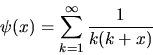
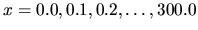
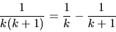
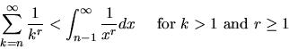

| Numerical Summation of a Series |
Produce a table of the values of the series
|  | (1) |
for the 3001 values of x, . All entries of the table must have a relative error less than 1.0e-10 (10 digits of precision). This problem is based on a problem from Hamming (1962), when mainframes were very slow by today's microcomputer standards.
This problem has no input file.
The output is to be written into a file. The output is to be formatted as two columns with the values of x and y(x) printed as in the C printf or the Pascal writeln.
printf("%6.2f%17.12f\n", x, psix )
writeln(x:6:2,psix:17:12)
As an example, the sample output below shows 4 acceptable lines out of 3001, which might appear in the output file.
The values of x should start at 0.00 and increase by 0.1 until the line with x=300.00 is output.
The problem with summing the sequence in equation 1 is that too many terms may be required to complete the summation in the given time. Additionally, if enough terms were to be summed, roundoff would render any typical double precision computation useless for the desired precision.
To improve the convergence of the summation process note that
|  | (2) |
which implies y(1)=1.0. One can then produce a series for y(x) - y(1) which converges faster than the original series. This series not only converges much faster, it also reduces roundoff loss.
This process of finding a faster converging series may be repeated again on
the second series to produce a third sequence, which converges even more
rapidly than the second.
The following equation is helpful in determining how may items are
required in summing the series above.
| 1 \mbox{ and } r \ge 1 \end{displaymath}"> | (3) |
0.00 1.644934066848 0.10 1.534607244904 ... 1.00 1.000000000000 ... 2.00 0.750000000000 ... 300.00 0.020942212934